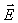
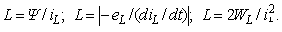

ВОПРОСЫ К ТЕМЕ 1
1. Определите понятия «электрическая цепь», «электрическая схема», «ветвь», «узел», «соединение (устранимый узел)», «контур». 2. Дайте определения электрических токов: проводимости, переноса, смещения и полного. 3. Что положено в основу определения: а) напряжённости электрического поля ; б) электрического напряжения U? Каковы единицы их измерения? Как связаны электрический потенциал j и напряжённость? 4. Как выбирают положительные направления для токов в пассивных элементах схем замещения и как связаны с ними положительные направления напряжений на выводах этих элементов? 5. Какие функции выполняет резистор как элемент схемы замещения реальной электрической цепи ? Запишите компонентное уравнение резистора. 6. Дайте определение понятия «индуктивная катушка». Запишите компонентное уравнение идеализированной индуктивной катушки. 7. Прокомментируйте три способа определения индуктивности L:  8. Дайте определение понятия «конденсатор». От каких параметров зависит ёмкость конденсатора? Запишите компонентное уравнение конденсатора. 9. Прокомментируйте три способа определения ёмкости С конденсатора: С = q/uC; С = i/(duC/dt);С = 2WС /(uС *uС ). 10. Выразите 4,7 кОм; 0,4 мГн и 0,1 нФ соответственно в омах, в генри и в фарадах. 11. Какие схемы электрической цепи вы знаете ? Приведите примеры простейших схем. 12. Дайте определения: а) «пассивный элемент электрической цепи»; б) «активный элемент электрической цепи». Приведите классификацию: а) пассивных элементов; б) активных элементов. 13. Изобразите характеристики: а) линейного и нелинейного резисторов; б) линейного и нелинейного конденсаторов; в) линейной и нелинейной катушек индуктивности. Постройте соответствующие им зависимости R = u/i = f (i), C = q/u = f (u), L = Y/i = f (i). 14. Изобразите характеристики: а) линейного резистора; б) линейного источника напряжения; в) линейного источника тока. 15. Изобразите ВАХ: а) независимых реального, идеализированного и идеального ИН; б) независимых реального, идеализированного и идеального ИТ. 16. Чему рано: а) внутреннее сопротивление идеального источника напряжения; б) внутренняя проводимость идеального источника тока? 17. Какому режиму работы ИН соответствует точка пересечения его внешней характеристики с осью: а) абсцисс; б) ординат? 18. Запишите уравнения внешних характеристик: а) независимого источника напряжения; б) независимого источника тока. 19. Нарисуйте ВАХ реального, идеализированного и идеального зависимого: а) источника напряжения; б) источника тока. 20. Источник напряжения преобразовывают в источник тока. Запишите формулы для определения параметров ИТ. 21. Источник тока преобразовывают в источник напряжения. Запишите формулы для определения параметров ИН. 22. Проверьте уровень усвоения Вами учебного материала темы 1, воспользовавшись программой тестирования УТИС. |